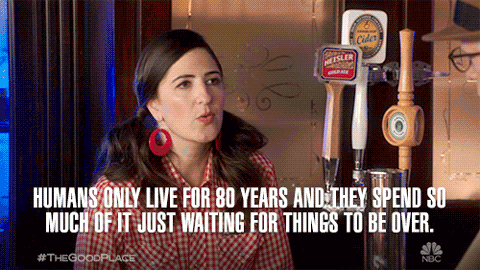

So Now You're Working From Home
Right now a lot of people are being thrust into the experience of working from home. Some may revel in it, some are dreading it, and some who now revel in it will come to dread it. This is a grand experiment and each person will have different outcomes.
As someone who has spent the past 13 years working from home, hopefully I can provide you some tips and pointers to help make this transition as painless as it can be. I certainly haven’t thought of everything here, so please get in touch if you have questions!
Keep your routines (except when you shouldn’t)
Working from home isn’t some sort of alternate reality. It’s just working, but from a different location. Keeping routines will help you keep work in its place.
Typical mornings
If your normal preparation for work involves waking up after one alarm snooze, exercising, showering, getting dressed, and then eating breakfast, your best bet is to keep doing that. This has an effect on your mental state, putting you in the typical work mindset.
Big caveat here is that if you have children your normal routine is most likely even more disrupted. In this case it is important to keep the routines that you can control in place. Another caveat is that the routine of a commute is also no longer in your world. This may allow you to adjust the times on your schedule to, say, get more sleep. Please get more sleep. You need the energy reserves right now. More on the power that commutes have to mentally delineate your day later.
Shower
Please. For the sake of your family. If you shower at night, shower at night. If you shower in the morning, shower in the morning. Shower.
Dress the part
I recommend you dress at least to the level you would dress when going out to do shopping on the weekend. (My assumption is that your shopping atire isn’t pajamas or ratty tee shirts from school.) Some may find it best to wear the same things they would typically wear to work in the office. Hopefully this helps your brain get in a focused work mindset.
Don’t follow my kids’ advice here. Kid 1, “Hey, why don’t you put some actual clothes on today?” Kid 2, “Clothes were so last week.”
By all means when you’re done working remove your pants if that is your routine.
Eat well
In as much as it is possible in these times, eat well. In this case, your routine is not necessarily the thing to stick to. Your family needs you healthy right now. All of us need you healthy right now. If you had always been meaning to up your bean intake, well, now is the time! By the time you’re back in the office your body will probably have adjusted and you won’t be nearly as gassy. Use this time to make that change you’ve kept putting on the back burner. (I mean, don’t go overboard. I wouldn’t go from zero to 2-day-fast out of the gate.)
Exercise
Much like the above, if at all possible it is important to at least replace the movement activity you would have done by nature of commuting and being at work. And if you already had an exercise routine, keep to it as much as you can with aerobic movement, body weight, and home equipment. It would be great right now to add in things like stretching, push ups, light yoga, etc.
Meditate
Do you meditate or pray each day? Continue doing that.
Communication
It may seem that working from home finally gives you the ability to shut down over-communication like you’ve always wanted to. You imagine the wasteful meetings being minimized and a bunch of time opening up to get the work done.
First of all, this is an opportunity to reduce meetings. Contrary to popular belief, however, communication as a general topic has to get better in a work-from-home environment. This especially goes for written communication. There is already a costly friction to half-considered thoughts being spewed around in traditional work environments. That cost probably gets orders of magnitude higher in a remote environment.
Writing clearly, yet succinctly, is a skill that requires practice. We all can get better and now is the time to really get practicing.
It is natural to think that group chat is the way to solve this problem. Group chat has its place on a remote team, but there are a lot of dangers – especially with the collective raised anxiety we are all feeling today. That being said, it is important to stay connected with your friends and colleagues during the workday. It is important to have some fun throughout the day as well, and real-time chat is a good place to do that.
Making use of the repositories of knowledge for your various projects is golden at times like this. Hopefully those repositories are organized and not buried in an email thread. Be thoughtful and considered with when and how you post things, but don’t hold helpful knowledge back. Writing in this depth requires vulnerability, which is one more thing we’ll all be practicing in these times.
Here are a bunch more thoughts and tips from Basecamp, a remote team who likely has over 100 years of collective experience. (I’m not +1‘ing all of their tools and methods, but there is a lot of collective knowledge in there.)
Finding a rhythm
You are going to have to find a way to get consecutive hours of focus each day in order to accomplish the work you need to do.
Avoid distractions
In the past I would definitely say if you are fortunate enough to be working in a room with a door, that door should be shut. However, in recent years I’ve learned that we sort of lightly poison ourselves with our own CO2 when we shut ourselves in a room for extended periods. I have taken measurements in my home office and CO2 counts rise throughout the day to points that will impact your alertness and cognition. Open windows and doors aren’t necessary at all times, but should probably be part of your daily rituals when working from home.
If there are other people in your home, headphones and discussing the rules are going to be your best bet. Let your family know that when the headphones are on you are working and need to concentrate uninterrupted. Of course as we say in our house, “If there is a fire or someone broke their arm, please interrupt.” Over time even smaller children will start to learn the rules.
Music
I am a firm believer that you are not going to get into a focused state listening to music with words in your native language. One exception is if you are so familiar with the songs that your mind doesn’t get distracted by the lyrics. I prefer instrumental jazz, ambient/electronic, classical, or foreign language music. Here’s a Spotify playlist of mostly ambient/electronic, but be aware that it breaks my own rules at times.
You can guess that I don’t have positive experience with being productive while listening to audiobooks, podcasts, TV shows, or movies. Though I have definitely worked with folks who run daytime TV all day and were also mega productive.
In the end it’s going to be up to your own self evaluation. Find your own right thing.
Switch it up
This is a little harder when we find ourselves asked to isolate in our homes. Typically I would recommend the occasional jaunt to the coffee shop for a change of scenery. This always had a huge effect on my productivity. Unfortunately the coffee shop isn’t a smart option for us in this moment. We can simulate changing our locations in and around our homes. Unplug your laptop from your monitor and go sit on the couch (with headphones). When the weather warms up, sit out on your patio for a bit. (Combating sun glare is a whole different challenge. 🙂) Put together a makeshift standing desk.
You can switch up other things like your music, your tidiness of your physical and virtual desktop, your fidget toys, your desktop backgrounds, etc. Keep things fresh and change things up every week.
Take breaks
In the past I’ve had very good luck using the Pomodoro Technique. The basic idea:
- Set a timer for 25 minutes (this is a “pomodoro”)
- Work on your task(s)
- When the timer finishes, take a 5-minute break
- Then start another pomodoro
- After 4 pomodoros take a longer break – say 20 minutes

I think this or some modified version of it can work very well. Maybe a Swimming Pool Technique where you work 50 minutes and then take 10 minute break would be better for you? Experiment!
What do you do on your breaks? (Incidentally, you should set a timer for your breaks as well! Being able to quickly set timers and alerts is quite a valuable thing for the remote worker.)
- Chat with your family
- Exercise with your family
- Grab a healthy snack
- Make a coffee or tea
- Stretch and work on your posture
When I read, “I can’t work from home because I’ll be too tempted to do the laundry and the thing and the other thing.” This is where you intentionally put these things. Switch the laundry and get back to work, etc. Be disciplined.
Save bigger distractions (watching a movie, playing a video game, etc) for lunch breaks. Reward yourself with these things as they aren’t things you can typically do in an office. Heck, maybe try a lunchtime Netflix Party with friends!
Starting the day
As I mentioned above, keeping routines is important. Everyone has a morning ritual, but without the commute to work you may find it difficult to get mentally switched on to work. In this time you will probably need to simulate your commute. Maybe it is walking and feeding the dog. Maybe it is walking and feeding the kids. Maybe it is just walking yourself. It will take intention, but try to find some activity or totem that helps you kick off your work day.
Ending the day
A lot of folks struggle transitioning to remote work because they have trouble leaving work at work. This was a bit easier when they had a commute. Whether the commute was 5 or 50 minutes, it was an obvious transition from work to the rest of their day. The brain would allow them to release their work problems and focus on the more important parts of life.
As a remote worker, leaving work directly for the dinner table is something I have done way more often than I should. It is an all too familiar feeling, sitting at the dinner table basically not listening to any of the conversations going on around me. My mind is still churning on that problem I was trying to solve. More likely than me listening to how my child’s day went was me rudely interrupting them to talk about my work challenges. That’s no good!
Here are a few things I’ve seen people use to put the finishing touches on their workdays and make the transition:
- Document where you’re at in your work. Write down what you’ve learned and where you need to pick up tomorrow. This will make it easier for your brain to allow you to set the problem aside for tomorrow. It is also practicing your written communication. Bonus!
- Finish the workday by planning tomorrow. Write down the top 3 things that you want to accomplish at work tomorrow.
- Have a happy hour video call with friends.
- Mentally commute:
- Go for a walk or insert other exercise routine
- Fire up that turntable you swore you were going to use and listen to one side of a record (or just rock out to your favorite album on streaming)
- Write in your journal
- Meditate or pray
- Play tetris
- Take a shower
Weekends
Sometimes projects require weekend work. I hope in your world this is the exception and not the rule. It is tempting to do a little work when we see our new home office set up over there in the corner. Many are fortunate to enjoy solving work problems. Certainly work can serve as a distraction from the stresses coming at us from both inside and outside of our homes.
It will take some intention to avoid working on the weekends. I suggest spending a bit of time on Friday afternoon to make your weekend plans. Maybe it’s a James Bond movie marathon. Maybe it’s baking banana bread for your neighbors. Maybe it’s sewing face masks. Maybe it’s getting to those household projects you’ve been putting off.
A lot of folks get a majority of their social time at work. It’s important in this time to continue getting virtual social time on the weekends. Plan video calls with family and friends, have extended family meals in a video call, or have a Netflix Party. Walk around your neighborhood and have socially-distant conversations with your neighbors using your outdoor voice.
This is probably a good time to set a goal for yourself. Always wanted to be able to do 10 pull ups? 25 push ups? Play guitar? Run an 8-minute mile? Become conversational in another language? Go for it!

Yeah, but what about child care and schooling?
Working from home while having to care for (and possibly teach) children that typically are not home on weekdays is an entirely different challenge. Unfortunately I do not have much advice to offer on that subject. If you have a partner in the house, you will have to take shifts. If not, it will be even more challenging. There is no shame in putting a movie on throughout the day to reward the kids’ focus on homeworking during other parts of the day. And I hope employers give everyone grace and understanding in this time. People over deadlines.
It’s simple, not easy
So that’s it. Basically you need to practice intentionality, discipline, and responsibility. Simple enough. It’s not natural for any of us, though. It will take time to become comfortable with working from home. It will test your reserves of forgiveness for yourself and for others. Over time, though, it can get more comfortable. While you might always prefer working in an office setting in the end, you can still figure out how to be happy and productive working from home.
Good luck and be well!